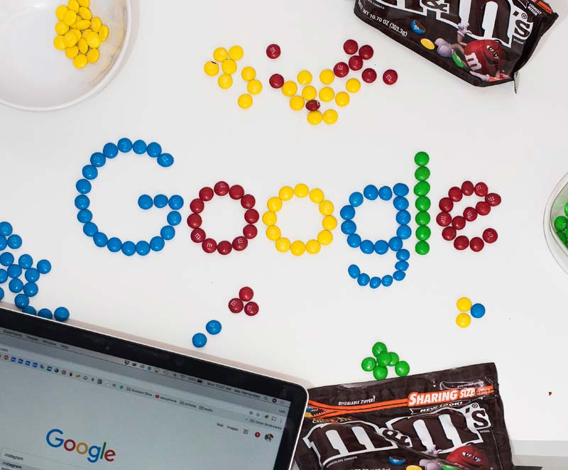

Search systems
Read time: 3.5 minutes
On this page
How searching works
Understanding search begins with understanding why people search.
Searching starts with an information need or a task. Users may want to:
- Find the right answer (for example, do I need a business number?)
- Find a few examples (for example, women small business Canada)
- Find all available information on a topic (for example, women small business funding)
- Refind something they found before (for example, Women Entrepreneurship Fund)
Users don’t always know what to call something they are looking for, so they identify a few keywords, and modify them as they discover more precise terminology in a relevant context (for example, from "women" and "business" to "women entrepreneurs").
Even though users may put some effort into finding information, research shows that users don't have very good search skills and that search functionality alone isn't enough to help discover information.
And if your content isn't findable, then it's not useful to anyone.
Photo by David Kovalenko on Unsplash
For passing and failing examples of approaches that impact search, refer to: Principle of front doors
Misconceptions about search
If you think that search is a technical process that is optimized from the back-end, you are about 80% wrong (80% because about 20% of findability does depend on technical processes and requires collaboration between content people and technical people).
You may often hear people say "search sucks", and "we need a better search engine".
Photo by Lalo Hernandez on Unsplash
Unfortunetly, there is no magic fix. Even Google needs the human touch.
Google contracts with over 10,000 search quality raters worldwide to evaluate its search results. Raters are given actual searches to conduct, drawn from real searches that happen on Google. They then rate the quality of pages that appear in the top results — hence the "quality rater" name.
Quality raters use a set of guidelines you can see here that are about 200 pages long, instructing them on how to assess website quality and whether the results they review meet the needs of those who perform searches.
Since a user may be using the Canada.ca search engine, a Department-specific search engine, or a competitor's search engine, it's critical that content is written and structured in a way that supports optimal findability for all searching.
The reality is, the core problem isn't search, but content. Searching content that is poorly named and poorly placed will likely underperform in most search engine results.
There are 5 key reasons why users cannot find information (aside from their limited searching skills), adapted from Abby Covert’s 4 causes of information mess:
- Too much information
- Not enough information
- Not the right information
- Not able to identify existing information as the right information (labeling problem)
- Some combination of these
All of these reasons are a result of:
- Broken processes
- Poor content planning
- Lack of understanding of user needs
- Lack of alignment between different areas of organization
- Lack of understanding of principles that support digital content
In addition to fixing the above problems, we need to also understand how both people and machines (search engines) discover information:
- People need page titles that reflect their mental models and search filters that allow them to reduce the number of results in meaningful ways
- Machines use metadata (information about content) tags such as title, keywords, file format, etc. to identify relevant search results for the user
You also need to understand that:
- Full-text search cannot replace meaningful metadata (imagine 1000s of search results that mention the words “project management” when all you want is a single, authoritative source that is dedicated to this topic)
- Not all content you publish should be indexed. This means not every page of your content will appear in search results. Indexing every page you publish is like having every page of a long book listed in the table of contents – not helpful, impractical and burdensome
- Indexing every page clutters up the search and makes it impossible to find any information because for every search term a user gets thousands of results
- Even when pages of your content aren't indexed and don't appear in the search results, users can find them by navigating to them through links from the main page of content which is indexed and can be located through search
- When a limited number of content pages on a specific topic are indexed, you exercise guidance and stewardship over your area of expertise and help users find the right information by reducing their options and leading them to authoritative information, rather than leaving it up to the user, who isn't a subject matter expert, to choose the right option from many competing results
And remember, everytime the organization does less work (such as implementing and managing metadata), the user has to do more work (such as reviewing and analyzing more content) which could lower their level of successfully accomplishing what they need to do.
All course sections
- Date modified: